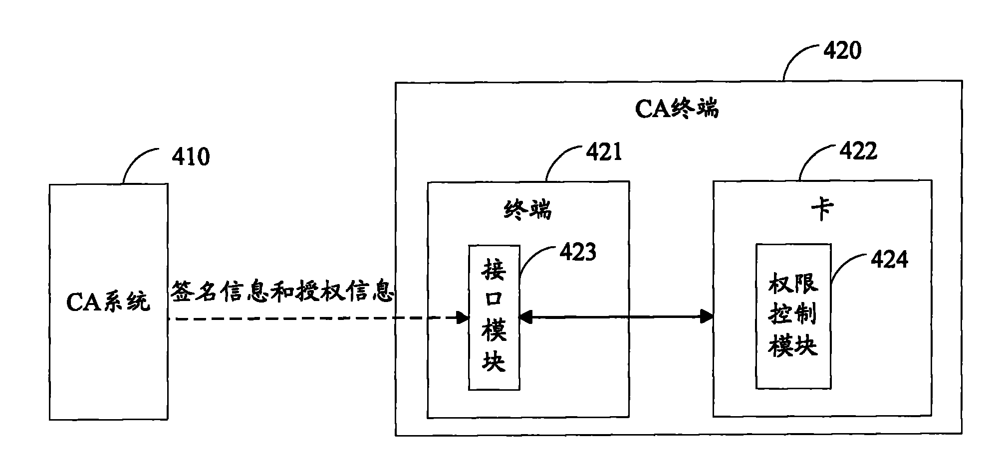

发明名称--一种在线下发授权信息的方法及系统
| 申请号 | CN200810239909.7 | 申请日 | 2008.12.12 | ||
| 公开（公告）号 | CN101420696A | 公开（公告）日 | 2009.04.29 | ||
| IPC分类号 | H04W12/06; H04W12/04; H04L29/06; H04L9/32; H04H60/91 | 申请（专利权）人 | 普天信息技术研究院有限公司; | ||
| 发明人 | 刘道斌;廖剑;曹会扬;王晨阳;岳维松;杨光敏; | 优先权号 |
摘要:
本发明公开了一种在线下发授权信息的方法，该方法用于向条件接收(CA)移动终端下发授权信息，所述CA移动终端包括移动终端和卡，所述移动终端和卡通过通用接口相连；该方法中，首先，CA系统对授权信息进行签名得到授权信息的签名信息，并将所述签名信息以及所述授权信息下发给所述移动终端；然后，所述移动终端将所述签名信息和授权信息发送给所述卡；最后，所述卡对所述签名信息进行验证，验证成功通过后，将所述授权信息保存在卡的安全区内，确保所述授权信息的安全。本发明还公开了一种对应于上述方法的在线下发授权信息的系统。应用本发明能够保证授权信息的安全性，降低终端侧的运算负荷，并降低移动终端成本。
摘要附图:
